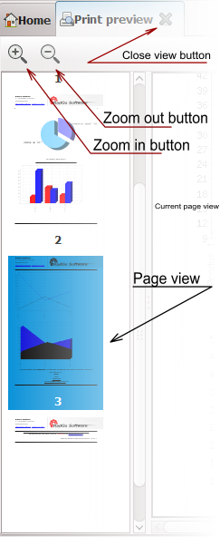

{application}


 |
Print preview panel |
 |
Note that the icons may vary according to the used theme/skin. |
Description:
This window will preview a PDF report or view.
|  |
Zoom in button When presing this button the page in the "current page view" will be enlarged. Zoom out button When presing this button the page in the "current page view" will be shrinked. Page view In the page view all the pages are displayed as thumbnails. In order to select a page you should double click on the desired page. The selected page will be displayed in the "current page view". Current page view Here will be displayed the selected page in the report. Is somehow the "working area" of the report. Close view button After you're done with the report, you can close the report by clicking this button. |